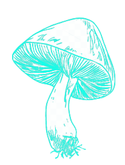

跳到主要内容

BE SLEEPY!
CREATIVE!
AND
LAZY!

introduction
SCROLL CAREFULLY, IT'S SMOOTH
小・心・地・滑
🔊
长按调节音量~
ASCII ANIMATION
NEXT PAGE
下一页
主页
HOME
视频
VIDEOS
图片
PHOTOS
联系
CONTACT
GET IN TOUCH ///
Email:
3583818830@qq.com
Github:
yamatanooroch
QQ:
3583818830
去边界以外寻找导航设计!
NEXT PAGE
下一页
FULL OF CREATIVITY
ABLE TO
IMAGINE
CLICK
THESE BULBS
NEXT PAGE
下一页
VIEW FIRST VISUAL FIRST VIEW FIRST VISUAL FIRST VIEW FIRST VISUAL FIRST VIEW FIRST VISUAL FIRST
STARE VISUAL STARE VISUAL STARE VISUAL STARE VISUAL STARE VISUAL STARE VISUAL STARE
VIEW FIRST VISUAL FIRST VIEW FIRST VISUAL FIRST VIEW FIRST VISUAL FIRST VIEW FIRST VISUAL FIRST
STARE VISUAL STARE VISUAL STARE VISUAL STARE VISUAL STARE VISUAL STARE VISUAL STARE VISUAL STARE
VIEW FIRST VISUAL FIRST VIEW FIRST VISUAL FIRST VIEW FIRST VISUAL FIRST VIEW FIRST VISUAL FIRST
STARE VISUAL STARE VISUAL STARE VISUAL STARE VISUAL STARE VISUAL STARE VISUAL STARE VISUAL STARE
视
觉
至
上
BACK TO TOP
返回顶部
🎉 CONGRATULATIONS! 🎉
You've lit up all the bulbs!
你好闲！💡
Continue